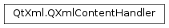

QXmlContentHandler¶
Detailed Description¶
The
PySide2.QtXml.QXmlContentHandlerclass provides an interface to report the logical content of XML data.If the application needs to be informed of basic parsing events, it can implement this interface and activate it using
QXmlReader.setContentHandler(). The reader can then report basic document-related events like the start and end of elements and character data through this interface.The order of events in this interface is very important, and mirrors the order of information in the document itself. For example, all of an element’s content (character data, processing instructions, and sub-elements) appears, in order, between the
PySide2.QtXml.QXmlContentHandler.startElement()event and the correspondingPySide2.QtXml.QXmlContentHandler.endElement()event.The class
PySide2.QtXml.QXmlDefaultHandlerprovides a default implementation for this interface; subclassing from thePySide2.QtXml.QXmlDefaultHandlerclass is very convenient if you only want to be informed of some parsing events.The
PySide2.QtXml.QXmlContentHandler.startDocument()function is called at the start of the document, andPySide2.QtXml.QXmlContentHandler.endDocument()is called at the end. Before parsing beginsPySide2.QtXml.QXmlContentHandler.setDocumentLocator()is called. For each elementPySide2.QtXml.QXmlContentHandler.startElement()is called, withPySide2.QtXml.QXmlContentHandler.endElement()being called at the end of each element. ThePySide2.QtXml.QXmlContentHandler.characters()function is called with chunks of character data;PySide2.QtXml.QXmlContentHandler.ignorableWhitespace()is called with chunks of whitespace andPySide2.QtXml.QXmlContentHandler.processingInstruction()is called with processing instructions. If an entity is skippedPySide2.QtXml.QXmlContentHandler.skippedEntity()is called. At the beginning of prefix-URI scopesPySide2.QtXml.QXmlContentHandler.startPrefixMapping()is called.
-
class
PySide2.QtXml.QXmlContentHandler¶
-
PySide2.QtXml.QXmlContentHandler.characters(ch)¶ Parameters: ch – unicode Return type: PySide2.QtCore.boolThe reader calls this function when it has parsed a chunk of character data (either normal character data or character data inside a CDATA section; if you need to distinguish between those two types you must use
QXmlLexicalHandler.startCDATA()andQXmlLexicalHandler.endCDATA()). The character data is reported inch.Some readers report whitespace in element content using the
PySide2.QtXml.QXmlContentHandler.ignorableWhitespace()function rather than using this one.A reader may report the character data of an element in more than one chunk; e.g. a reader might want to report “a<b” in three events (“a “, “<” and ” b”).
If this function returns
falsethe reader stops parsing and reports an error. The reader uses the functionPySide2.QtXml.QXmlContentHandler.errorString()to get the error message.
-
PySide2.QtXml.QXmlContentHandler.endDocument()¶ Return type: PySide2.QtCore.boolThe reader calls this function after it has finished parsing. It is called just once, and is the last handler function called. It is called after the reader has read all input or has abandoned parsing because of a fatal error.
If this function returns
falsethe reader stops parsing and reports an error. The reader uses the functionPySide2.QtXml.QXmlContentHandler.errorString()to get the error message.
-
PySide2.QtXml.QXmlContentHandler.endElement(namespaceURI, localName, qName)¶ Parameters: - namespaceURI – unicode
- localName – unicode
- qName – unicode
Return type: PySide2.QtCore.boolThe reader calls this function when it has parsed an end element tag with the qualified name
qName, the local namelocalNameand the namespace URInamespaceURI.If this function returns
falsethe reader stops parsing and reports an error. The reader uses the functionPySide2.QtXml.QXmlContentHandler.errorString()to get the error message.
-
PySide2.QtXml.QXmlContentHandler.endPrefixMapping(prefix)¶ Parameters: prefix – unicode Return type: PySide2.QtCore.boolThe reader calls this function to signal the end of a prefix mapping for the prefix
prefix.If this function returns
falsethe reader stops parsing and reports an error. The reader uses the functionPySide2.QtXml.QXmlContentHandler.errorString()to get the error message.
-
PySide2.QtXml.QXmlContentHandler.errorString()¶ Return type: unicode The reader calls this function to get an error string, e.g. if any of the handler functions returns
false.
-
PySide2.QtXml.QXmlContentHandler.ignorableWhitespace(ch)¶ Parameters: ch – unicode Return type: PySide2.QtCore.boolSome readers may use this function to report each chunk of whitespace in element content. The whitespace is reported in
ch.If this function returns
falsethe reader stops parsing and reports an error. The reader uses the functionPySide2.QtXml.QXmlContentHandler.errorString()to get the error message.
-
PySide2.QtXml.QXmlContentHandler.processingInstruction(target, data)¶ Parameters: - target – unicode
- data – unicode
Return type: PySide2.QtCore.boolThe reader calls this function when it has parsed a processing instruction.
targetis the target name of the processing instruction anddatais the data in the processing instruction.If this function returns
falsethe reader stops parsing and reports an error. The reader uses the functionPySide2.QtXml.QXmlContentHandler.errorString()to get the error message.
-
PySide2.QtXml.QXmlContentHandler.setDocumentLocator(locator)¶ Parameters: locator – PySide2.QtXml.QXmlLocatorThe reader calls this function before it starts parsing the document. The argument
locatoris a pointer to aPySide2.QtXml.QXmlLocatorwhich allows the application to get the parsing position within the document.Do not destroy the
locator; it is destroyed when the reader is destroyed. (Do not use thelocatorafter the reader is destroyed).
-
PySide2.QtXml.QXmlContentHandler.skippedEntity(name)¶ Parameters: name – unicode Return type: PySide2.QtCore.boolSome readers may skip entities if they have not seen the declarations (e.g. because they are in an external DTD). If they do so they report that they skipped the entity called
nameby calling this function.If this function returns
falsethe reader stops parsing and reports an error. The reader uses the functionPySide2.QtXml.QXmlContentHandler.errorString()to get the error message.
-
PySide2.QtXml.QXmlContentHandler.startDocument()¶ Return type: PySide2.QtCore.boolThe reader calls this function when it starts parsing the document. The reader calls this function just once, after the call to
PySide2.QtXml.QXmlContentHandler.setDocumentLocator(), and before any other functions in this class or in thePySide2.QtXml.QXmlDTDHandlerclass are called.If this function returns
falsethe reader stops parsing and reports an error. The reader uses the functionPySide2.QtXml.QXmlContentHandler.errorString()to get the error message.
-
PySide2.QtXml.QXmlContentHandler.startElement(namespaceURI, localName, qName, atts)¶ Parameters: - namespaceURI – unicode
- localName – unicode
- qName – unicode
- atts –
PySide2.QtXml.QXmlAttributes
Return type: PySide2.QtCore.boolThe reader calls this function when it has parsed a start element tag.
There is a corresponding
PySide2.QtXml.QXmlContentHandler.endElement()call when the corresponding end element tag is read. The andPySide2.QtXml.QXmlContentHandler.endElement()calls are always nested correctly. Empty element tags (e.g.<x/>) cause a call to be immediately followed by anPySide2.QtXml.QXmlContentHandler.endElement()call.The attribute list provided only contains attributes with explicit values. The attribute list contains attributes used for namespace declaration (i.e. attributes starting with xmlns) only if the namespace-prefix property of the reader is true.
The argument
namespaceURIis the namespace URI, or an empty string if the element has no namespace URI or if no namespace processing is done.localNameis the local name (without prefix), or an empty string if no namespace processing is done,qNameis the qualified name (with prefix) andattsare the attributes attached to the element. If there are no attributes,attsis an empty attributes object.If this function returns
falsethe reader stops parsing and reports an error. The reader uses the functionPySide2.QtXml.QXmlContentHandler.errorString()to get the error message.
-
PySide2.QtXml.QXmlContentHandler.startPrefixMapping(prefix, uri)¶ Parameters: - prefix – unicode
- uri – unicode
Return type: PySide2.QtCore.boolThe reader calls this function to signal the begin of a prefix-URI namespace mapping scope. This information is not necessary for normal namespace processing since the reader automatically replaces prefixes for element and attribute names.
Note that and
PySide2.QtXml.QXmlContentHandler.endPrefixMapping()calls are not guaranteed to be properly nested relative to each other: all events occur before the correspondingPySide2.QtXml.QXmlContentHandler.startElement()event, and allPySide2.QtXml.QXmlContentHandler.endPrefixMapping()events occur after the correspondingPySide2.QtXml.QXmlContentHandler.endElement()event, but their order is not otherwise guaranteed.The argument
prefixis the namespace prefix being declared and the argumenturiis the namespace URI the prefix is mapped to.If this function returns
falsethe reader stops parsing and reports an error. The reader uses the functionPySide2.QtXml.QXmlContentHandler.errorString()to get the error message.
© 2018 The Qt Company Ltd. Documentation contributions included herein are the copyrights of their respective owners. The documentation provided herein is licensed under the terms of the GNU Free Documentation License version 1.3 as published by the Free Software Foundation. Qt and respective logos are trademarks of The Qt Company Ltd. in Finland and/or other countries worldwide. All other trademarks are property of their respective owners.